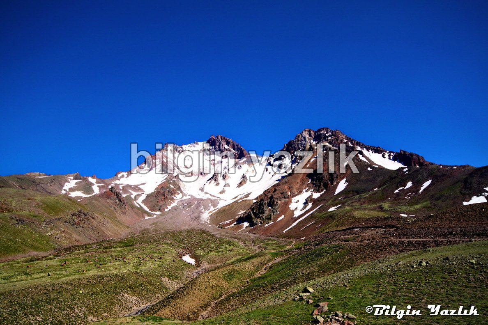
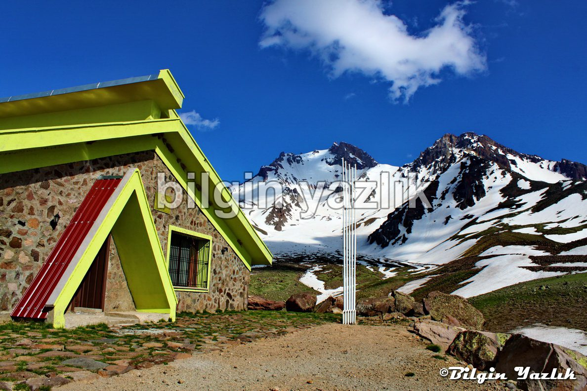
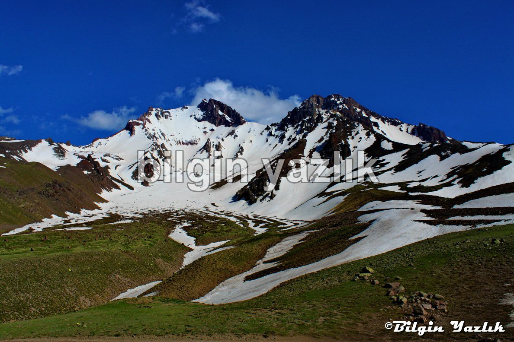

Süt Donduran Yaylası
Erciyes Dağı’nın yüksek rakımlı bölgesinde yer alan bu yaylanın adının nereden geldiğini tahmin etmek oldukça kolay.
Yayla bazı zamanlar gerçekten oldukça soğuk oluyor.
Yayla Erciyes’in buzullarının hemen eteğinde yer alıyor ve buzulların erimesi ile akan sular yaylanın içinden geçerek aşağılara ulaşıyor.
Bu yayla aynı zamanda dağcılar tarafından zirve tırmanışı öncesi kamp alanı olarak kullanılıyor, hatta bu amaç için yaptırılmış bir de dağ evi burada bulunuyor.
Bu dağ evini ilk defa gördüğümde hayretler içerisinde düşmüştüm, bu kadar zor ulaşılan, bu kadar yüksek rakımlı bir yere bu kadar teferruatlı bir dağ evi nasıl yapılmış diye şaşırmıştım.
Yaylaya kadar jeep türü araçlarla çıkılabilecek bir stabilize yol bulunuyor.
Temiz hava ve yazın en sıcak zamanında 15 derece sıcaklık arayan herkesin mutlaka görmesi gereken bir yayla burası.
Bu yayladan Erciyes o kadar güzel poz veriyor ki gözleriniz ve ruhunuz bayram edecek.
Konum:
38°33’12.71″K
35°25’14.75″D



Bu yazı taliyol arşivinden taşınmıştır. · özgün kayıt